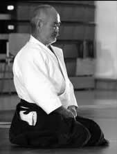

Authorotive text.
Many authoritive works have been published on the subject. Also feel free to consult our links page for more information or refer to our suggested reading list.
Below find a collection of articles on Aikido to download and share as well as a suggested reading list.
Alternatively also consult our links page for general information.
Articles on Aikido to download and share :
|
This article takes the form of an exchange between Chiba Sensei and the editor of the Aikido Journal, Stanley Pranin. This document is also available to download. Format: Microsoft Word |
 |
|
A short article by Kubota Sensei, listing the twelve most common bad habits amongst students. |
|

|
Some Thoughts on Grading Examinations An article first published in the British Aikido Federation Newsletter, December 2002, in which Kenneth Cottier Shihan discusses grading examinations. This document is also available to download. Format: Microsoft Word |